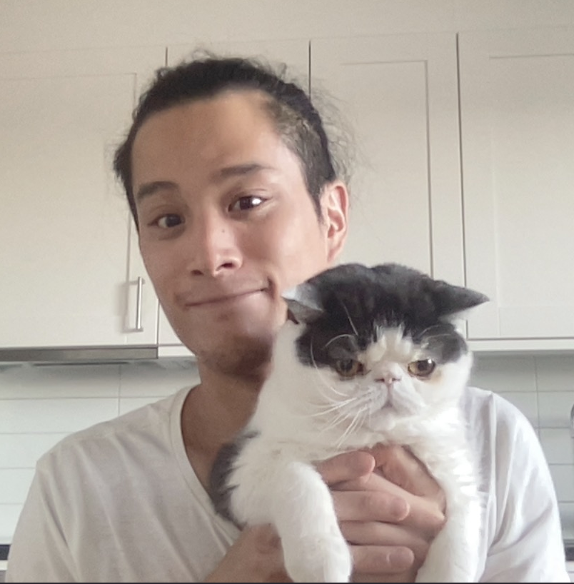

William Lam
Hello! William heter jag och är 28 år gammal. Född och uppväxt i Malmö. Kommer från en stor familj av 6 personer, mor och far och så har jag 3 syskon.Jag gillar att spela,träna och spendera tid med min sambo och vänner. Har två katter Luna och Hakku(katten på bilden ovanför). Jobbat sen man slutat gymnasiet och tänkte att det var dags att ändra på det. Valde att studera till javautvecklare för att det intresserar mig mer än att bara jobba i en butik.
with great power, comes great responsibility